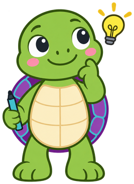

Computational Thinking Foundations¶
Summary¶
This chapter introduces the vocabulary of computational thinking, including decomposition, pattern recognition, abstraction, algorithm design, and precise instructions. Students learn to break problems into steps, recognize ambiguity in instructions, and think about efficiency, reusability, and iterative design before writing any code. These ideas form the mental toolkit that the rest of the course builds on. After completing this chapter, students will be able to describe a problem-solving process in clear, step-by-step, unambiguous terms.
Concepts Covered¶
This chapter covers the following 16 concepts from the learning graph:
| Concept | Concept Impact Score |
|---|---|
| Computational Thinking | 215 |
| Decomposition | 149 |
| Pattern Recognition | 2 |
| Abstraction | 69 |
| Algorithm Design | 108 |
| Algorithm | 104 |
| Problem Solving | 3 |
| Step-By-Step Thinking | 76 |
| Precise Instructions | 3 |
| Ambiguity In Instructions | 2 |
| Generalization | 2 |
| Efficiency Of A Solution | 4 |
| Reusability | 7 |
| Computational Artifact | 2 |
| Iterative Design | 2 |
| Planning Before Coding | 3 |
Prerequisites¶
This chapter assumes only the prerequisites listed in the course description.
Hello! I am Cody
 I am Cody, a CoderDojo turtle, and I will be with you in every chapter of
this book. When you see me waving like this, a new chapter is starting.
When I am thinking, I will ask you to predict what happens next. When I
have a tip, I will show you a shortcut. When I hold up a warning, I
will point out a mistake that catches almost everybody. When I am
cheering you on, the part you are reading is a hard one and getting
stuck there is normal. And when I am celebrating, you have finished
something worth being proud of. One step at a time!
I am Cody, a CoderDojo turtle, and I will be with you in every chapter of
this book. When you see me waving like this, a new chapter is starting.
When I am thinking, I will ask you to predict what happens next. When I
have a tip, I will show you a shortcut. When I hold up a warning, I
will point out a mistake that catches almost everybody. When I am
cheering you on, the part you are reading is a hard one and getting
stuck there is normal. And when I am celebrating, you have finished
something worth being proud of. One step at a time!
You Already Think Like a Programmer¶
You have never written a program. That is fine. You have still done the hardest part of programming many, many times.
Think about tying your shoes. Nobody tied them for you today. You pulled the laces tight. You made one loop. You wrapped the other lace around it. You pushed it through the hole and pulled. You did those steps in that order, every time, without stopping to think about it.
That is a program. It is a list of steps, done in order, that solves a problem. The only new thing in this book is who does the steps. Instead of your hands doing them, a computer will.
Computers are fast and they never get tired. But computers cannot guess. A computer will do exactly what you say, in exactly the order you say it, even when what you said is not what you meant. So the skill you need is not typing. It is thinking clearly.
That skill has a name.
Computational Thinking¶
Computational thinking is the way of thinking that lets you solve a problem so clearly that a computer could follow your solution.
It is not "thinking like a robot." It is closer to the opposite. A robot cannot decide what to do. You do that part. You look at a messy, confusing problem and you turn it into something clear, small, and ordered. Then the machine takes over.
Here is what makes computational thinking different from just being smart. When you think computationally, you have to say every single step out loud. You cannot leave anything out and hope the listener fills in the gap.
Let us try it. Imagine you have to tell a friend how to get ready for school in the morning. You might say:
"Get up, get dressed, eat breakfast, grab your backpack, go."
That is good enough for a friend. Your friend already knows how to get dressed. But a computer does not. A computer would stop at "get dressed" and have no idea what to do. Getting dressed is really many smaller steps:
- Open the drawer.
- Take out a shirt.
- Put your head through the neck hole.
- Put your left arm through the left sleeve.
- Put your right arm through the right sleeve.
- Pull the shirt down.
Notice something. The second list is not smarter than the first list. It is just more complete. That is the whole trick. Computational thinking means being willing to say the boring, obvious steps out loud, because the computer genuinely does not know them.
Computational thinking is made of four powers. You will use all four in every project in this book:
| Power | What it means | Everyday example |
|---|---|---|
| Decomposition | Break a big problem into small pieces | Cleaning your room one shelf at a time |
| Pattern recognition | Notice what repeats | Every jumping jack is the same move |
| Abstraction | Give the details a short name and hide them | Saying "make a sandwich" instead of 12 steps |
| Algorithm design | Put the steps in the right order | A recipe you can hand to somebody else |
That table is a map of the rest of this chapter. We will take each power one at a time, in that order, because each one leans on the one before it.
Before we look at our first picture, here is the one word in it you have not met yet. A stage is the white rectangle in Scratch where your program's drawing shows up. You will meet the real stage in Chapter 2. For now, just know it is the place where the results appear.
Diagram: The Four Powers of Computational Thinking¶
Run The Four Powers of Computational Thinking Fullscreen
The Four Powers of Computational Thinking
Type: interactive-infographic
sim-id: four-powers-explorer
Library: p5.js
Status: Specified
An interactive infographic that lets a student explore the four powers of computational thinking by clicking on them.
Learning objective (Bloom: Understand): Given the name of one of the four powers of computational thinking, the student can explain in their own words what that power means and give one everyday example of it.
Layout. A responsive canvas, default 800 x 500 pixels, that resizes on the browser window resize event and never scrolls horizontally on a tablet in portrait orientation. The canvas is divided into two regions: a left region (about 55% of the width) holding four large clickable cards arranged in a 2 x 2 grid, and a right region (about 45%) holding an infobox that displays the selected card's detail.
The four cards. Each card is a rounded rectangle 240 x 170 pixels with an 18-pixel-tall title, a simple line-art icon drawn in code (no external image files), and a one-line subtitle:
- Card 1, top-left, "Decomposition", subtitle "Break it into pieces". Icon: one large square that splits into four small squares.
- Card 2, top-right, "Pattern Recognition", subtitle "Spot what repeats". Icon: a row of three identical small triangles.
- Card 3, bottom-left, "Abstraction", subtitle "Give it a name". Icon: a labeled box with the label "draw square" and the details greyed out behind it.
- Card 4, bottom-right, "Algorithm Design", subtitle "Put it in order". Icon: three numbered steps connected by downward arrows.
Colors. Card fills use the book's palette: decomposition #4C97FF (Scratch motion blue), pattern recognition #FFAB19 (Scratch control orange), abstraction #9966FF (Scratch custom-block purple), algorithm design #0FBD8C (Scratch pen green). Card text is white. The infobox is a #F5F5F5 panel with #333333 text. The selected card is drawn with a 4-pixel white inner border and a slight scale-up of 1.05 so the selection is obvious.
Interaction.
- On hover, a card lifts by 4 pixels and the mouse cursor becomes a pointer, so the student can tell the cards are clickable before clicking.
- On click, the card becomes selected and the infobox fills with three things: a one-sentence definition, a school-life example, and a Scratch example written in child-friendly language.
- Only one card can be selected at a time. Clicking the selected card again does not deselect it, so the infobox is never empty after the first click.
- On first load, before any click, the infobox shows the prompt text "Click a card to learn about that power." in italic grey.
- A small counter at the bottom of the infobox reads "Explored: 2 of 4" and updates as the student clicks new cards. When all four have been visited, the counter is replaced by the message "You have explored all four powers!" in the pen-green color.
Infobox content.
- Decomposition: "Breaking a big problem into smaller problems you can solve one at a time." School example: "A book report is really: read the book, pick your favorite part, write about it, check your spelling." Scratch example: "Drawing a house is really: draw a square, then draw a triangle on top."
- Pattern Recognition: "Noticing when the same thing happens more than once." School example: "Every multiplication problem in the row uses the same steps with different numbers." Scratch example: "All four sides of a square use the same move-and-turn pair."
- Abstraction: "Giving a group of steps one short name so you can stop thinking about the details." School example: "You say 'brush your teeth' instead of listing eight separate steps." Scratch example: "You make a block called 'draw square' and just use its name after that."
- Algorithm Design: "Putting your steps in an order that actually works." School example: "You have to put on socks before shoes, not after." Scratch example: "Pen down has to come before you move, or nothing gets drawn."
Implementation: p5.js sketch in main.html with a responsive canvas. Card positions are recomputed in windowResized() so the 2 x 2 grid becomes a 1 x 4 stack when the canvas is narrower than 600 pixels, with the infobox moving below the cards.
Problem Solving: Where Programs Come From¶
Every program starts as a problem. In everyday talk, a "problem" sounds like something bad. In computing it just means something you want to be different.
Here are real problems a young programmer might have:
- I want a turtle to draw a square on the screen.
- I want a spelling word to appear when I press a key.
- I want a flower shape made of eight circles.
Problem solving is the work of getting from that wish to a thing that actually happens. It has four parts, and programmers do them in this order.
- Understand the problem. What exactly do you want? "Draw a shape" is too fuzzy. "Draw a square with sides 100 steps long" is a real goal, because you would know if you got it.
- Make a plan. Decide the steps before you touch anything.
- Do the plan. Build it.
- Look back. Did it work? If not, what part went wrong?
Let us walk through those four parts on a real problem.
The problem: You want to give a friend a paper airplane, but your friend is sitting on the other side of the classroom and you cannot get up.
Understand. The goal is not "throw the plane." The goal is "the plane ends up on my friend's desk." That is a much better goal, because you can check it.
Plan. Aim above your friend's head, because paper planes drop as they fly. Throw gently, because hard throws curve. Wait until the teacher is facing the board.
Do. Throw it.
Look back. It landed two desks short. Now you know something useful: throw a little harder next time. You did not fail. You collected information.
That last part matters more than people expect. Programmers spend a large part of their time on step 4. A program that does not work is not a disaster. It is a message telling you which part of your plan was wrong.
Predict First

Before you run any program in this book, stop and say out loud what you think will happen. If you are right, you understood it. If you are wrong, you just found something new to learn. What do you think will happen?Decomposition: Breaking It Into Pieces¶
Decomposition means breaking a big problem into smaller problems, then breaking those into even smaller ones, until every piece is small enough to solve easily.
The word looks scary. It just means "taking apart." When leaves decompose in the woods, they break down into smaller and smaller bits. When you decompose a problem, you do the same thing on purpose.
Here is why this is the most useful habit in this whole book. A big problem makes your brain freeze. "Build a video game" is too big. Nobody can hold that in their head. But "make the ball move right" is not scary at all. You could do that in a minute. Decomposition turns one frozen problem into a list of unfrozen ones.
A Worked Example: Drawing a House¶
Say you want the turtle to draw a house. Right now that is one big fuzzy job. Let us take it apart.
First cut. A house is really two shapes:
- A square for the walls.
- A triangle for the roof.
Better. But "draw a square" is still a bunch of work for a computer. Let us cut again.
Second cut. A square is really:
- Draw a side.
- Turn a corner.
- Draw a side.
- Turn a corner.
- Draw a side.
- Turn a corner.
- Draw a side.
- Turn a corner.
Now cut one more time.
Third cut. "Draw a side" is really:
- Put the pen down so it makes a line.
- Move forward 100 steps.
Stop. That last piece is small enough. "Move forward 100 steps" is a single thing you can hand to a computer with no explaining left over. When you reach pieces that small, you are done decomposing.
Look at what happened. You started with "draw a house," which you had no idea how to do. You ended with "move forward 100 steps," which is one block. You never got smarter along the way. You just kept cutting.
Before you read the diagram below, here is its one new word. A level is one row of the breakdown. The top level is the whole job. Each level below it is more detailed and less fuzzy than the one above.
Diagram: Decomposing a House Drawing¶
Run Decomposing a House Drawing Fullscreen
Decomposing a House Drawing
Type: interactive-diagram
sim-id: house-decomposition-tree
Library: vis-network
Status: Specified
A clickable tree diagram showing one drawing problem broken down across four levels, from the whole job to single computer instructions.
Learning objective (Bloom: Analyze): Given a drawing task, the student can identify which parts of the task are still too big to program and which parts are small enough to become a single instruction.
Graph structure. A vis-network hierarchical directed graph, direction up-to-down, level separation 110 pixels, node spacing 160 pixels. Nodes by level:
- Level 0 (one node): "Draw a house"
- Level 1 (two nodes): "Draw the walls (a square)", "Draw the roof (a triangle)"
- Level 2, under the square (two nodes): "Draw one side", "Turn one corner"
- Level 2, under the triangle (two nodes): "Draw one side", "Turn one corner"
- Level 3, under "Draw one side" (two nodes): "Put the pen down", "Move forward 100 steps"
- Level 3, under "Turn one corner" (one node): "Turn right 90 degrees"
Colors and shape coding. Nodes are rounded boxes with white 16-pixel label text. Level 0 is #9966FF. Level 1 is #4C97FF. Level 2 is #FFAB19. Level 3 nodes, the ones small enough to become a single Scratch block, are #0FBD8C and carry a small white check-mark glyph before the label. The color change from orange to green is the visual message of the whole diagram: green means "small enough to program."
Legend. A fixed legend below the network, drawn in HTML rather than inside the canvas, reads: "Purple = the whole job. Blue and orange = still too big. Green = small enough to be one Scratch block."
Interaction.
- Clicking any node opens an infobox panel below the network showing the node's label as a heading and two lines: "Is this small enough to program? Yes / Not yet", and a one-sentence reason written for a third grader.
- Clicking a node also highlights the full path from that node up to "Draw a house" by thickening those edges to 4 pixels and dimming all other nodes to 30% opacity, so the student can see which big job the small step belongs to. Clicking the background clears the highlight.
- Hovering a node shows a tooltip with the same "Yes / Not yet" answer, so the answer is reachable without a click.
- The network is not draggable or zoomable by the student, so the layout cannot be accidentally destroyed; physics is disabled and positions are fixed by the hierarchical layout.
Infobox reasons.
- "Draw a house": Not yet. This is the whole job. It is made of two shapes.
- "Draw the walls (a square)": Not yet. A square is four sides and four corners.
- "Draw the roof (a triangle)": Not yet. A triangle is three sides and three corners.
- "Draw one side": Not yet. You still have to put the pen down first.
- "Turn one corner": Not yet. You have to say how far to turn.
- "Put the pen down": Yes. This is one block in Scratch.
- "Move forward 100 steps": Yes. This is one block in Scratch.
- "Turn right 90 degrees": Yes. This is one block in Scratch.
Implementation: vis-network in main.html with a responsive container that fills 100% of the iframe width and re-fits the network on the window resize event.
You will use decomposition in every single chapter from here on. When a project feels too hard, that is not a sign to give up. It is a sign that you have not cut it into small enough pieces yet.
Pattern Recognition: Spotting What Repeats¶
Pattern recognition means noticing when the same thing shows up more than once.
Go back to the square. Look at the eight steps again:
- Draw a side, turn a corner.
- Draw a side, turn a corner.
- Draw a side, turn a corner.
- Draw a side, turn a corner.
Something jumps out. It is the same two steps, four times. That is a pattern.
Patterns are valuable because they save you work. Once you notice that a square is "one pair of steps, repeated four times," you do not have to think about the square as eight separate things any more. You only have to think about one pair and one number.
Patterns are everywhere in this course:
- Every side of a polygon is drawn the same way.
- Every corner of a polygon is turned the same way.
- Every flower petal in a flower drawing is the same petal, just facing a different direction.
In Chapter 5 you will learn about loops, which are Scratch blocks that repeat other blocks for you. A loop is only useful if you first notice the repeat. So pattern recognition is the skill that makes loops possible.
Abstraction: Giving It a Name¶
Abstraction means giving a group of steps one short name, and then using the name instead of the steps.
You do this constantly. When your family says "let's set the table," nobody lists every fork. "Set the table" is a name that stands for a whole pile of steps everybody already knows. That name is an abstraction.
Here is the important part: abstraction does not delete the details. The forks still have to get on the table. Abstraction just hides the details so your brain can think about bigger things.
A Worked Example: The "Draw Square" Name¶
Imagine two students describing the same drawing.
Student A says:
Pen down. Move 100. Turn 90. Move 100. Turn 90. Move 100. Turn 90. Move 100. Turn 90. Pen up. Move 150. Pen down. Move 100. Turn 90. Move 100. Turn 90. Move 100. Turn 90. Move 100. Turn 90. Pen up.
Student B says:
Draw a square. Move over. Draw a square.
Both students described exactly the same picture. Student B's version is not missing anything, because "draw a square" already means those eight steps. But Student B's version is something a human can actually hold in their head.
That is the power of abstraction. It does not make the work smaller. It makes the thinking smaller.
In Chapter 9 you will learn Scratch's "Make a Block" feature, which lets you
create your very own named block. When you make a block called draw
square, you have done exactly what Student B did. From then on, one
block does the work of eight.
Here is a table comparing the three powers you have met so far. You have already read about all three in prose above, so this table is only here to put them side by side.
| Decomposition | Pattern Recognition | Abstraction | |
|---|---|---|---|
| What you do | Cut a big job into small jobs | Notice a small job repeating | Name a group of jobs |
| Question you ask | "What is this made of?" | "Have I seen this before?" | "What should I call this?" |
| What you get | A list of small pieces | A repeat you can loop | One name instead of many steps |
| Scratch feature it leads to | Separate scripts | Repeat blocks (Chapter 5) | Custom blocks (Chapter 9) |
Diagram: Abstraction Layers Explorer¶
Run Abstraction Layers Explorer Fullscreen
Abstraction Layers Explorer
Type: microsim
sim-id: abstraction-layers-explorer
Library: p5.js
Status: Specified
A MicroSim in which a student peels back the layers of an abstraction to see the hidden detail underneath, then hides it again.
Learning objective (Bloom: Understand): The student can explain that naming a group of steps hides detail without removing it, and can state how many underlying steps a single named block stands for.
Layout. Responsive canvas, default 750 x 480 pixels, resizing on window resize. The canvas has a drawing region and a control region. The drawing region shows a vertical stack of three horizontal bands representing three levels of detail, top to bottom:
- Band 1, "What you say": a single purple rounded block labeled
draw flower. - Band 2, "What that means": three blue blocks side by side, labeled
draw square,turn right 45,repeat 8 times. - Band 3, "What the computer does": eight small green blocks labeled
pen down,move 100,turn 90,move 100,turn 90,move 100,turn 90,move 100.
Controls. Below the drawing region, aligned left with 15-pixel padding and labels to the left of each control:
- A slider labeled "Detail level" with range 1 to 3, step 1, default value 1. At level 1 only band 1 is visible. At level 2 bands 1 and 2 are visible with an animated downward arrow connecting them. At level 3 all three bands are visible.
- A checkbox labeled "Show step count", default off. When on, each band displays a count to its right: "1 thing to remember", "3 things to remember", "8 things to remember."
- A button labeled "Reset" that returns the slider to 1 and the checkbox to off.
Behavior. Moving the slider animates the newly revealed band sliding down into place over 400 milliseconds so the reveal reads as "opening up" rather than a jump cut. A fixed caption under the drawing region updates with the slider: at level 1, "One name. That is all you have to remember."; at level 2, "The name was really three things."; at level 3, "And those were really eight things. The name hid all of them for you."
Colors. Purple #9966FF for the named block, blue #4C97FF for the middle layer, green #0FBD8C for the machine steps, matching the four-powers infographic so the color meanings stay consistent across the book. Background #FFFFFF, caption text #333333 at 16 pixels.
Implementation: p5.js with a p5.dom slider, checkbox, and button. Canvas width follows the container width; when the container is narrower than 500 pixels the block labels shrink to 12-pixel text and the eight machine-step blocks wrap to two rows.
Algorithms: A Plan Somebody Else Could Follow¶
You now have three powers: cutting a problem up, spotting repeats, and naming things. Those powers give you a pile of small steps. The fourth power is about putting those steps in order.
An algorithm is a list of steps, in order, that solves a problem and always finishes.
That definition has three parts, and all three matter:
- A list of steps. Not a feeling, not a wish. Actual steps.
- In order. Socks before shoes. Pen down before moving.
- Always finishes. An algorithm that never ends is broken.
A recipe is an algorithm. Directions to the library are an algorithm. Long division is an algorithm. You have followed hundreds of them.
A Worked Example: The Sandwich Algorithm¶
Here is a famous classroom challenge. Write the steps for making a peanut butter sandwich. Then have somebody follow your steps exactly, with no guessing allowed.
A first try usually looks like this:
- Get the bread.
- Put peanut butter on it.
- Eat.
Now watch what a very literal follower does with that. They pick up the whole loaf, still in the bag. They set the jar of peanut butter, lid on, on top of the bag. Then they try to eat the whole thing.
They did nothing wrong. Your steps really did say that.
The fixed version is longer and much less exciting:
- Open the bread bag.
- Take out two slices of bread.
- Lay both slices flat on the plate.
- Open the peanut butter jar.
- Put the knife into the jar and scoop out one spoonful.
- Spread the peanut butter across the top of one slice.
- Put the second slice on top, peanut butter side down.
- Stop.
Notice step 8. "Stop" seems silly to write. But remember the third part of the definition: an algorithm has to finish. Computers really do need to be told when they are done.
Compare the two lists:
| First try | Fixed version | |
|---|---|---|
| Number of steps | 3 | 8 |
| Guessing needed | A lot | None |
| Would a computer get it right? | No | Yes |
| Is it more fun to write? | Yes | No |
The fixed version is worse to write and better to run. That trade shows up all through programming.
The Computer Is Not Being Difficult
When your program does something silly, it is not broken and it is not being mean. It did exactly what your steps said. Read your steps again and look for the one that means something different from what you pictured.
Precise Instructions¶
The sandwich example shows why programmers care so much about precise instructions. A precise instruction is one that can only be understood one way.
Look at the difference:
| Fuzzy instruction | Precise instruction |
|---|---|
| Move a little | Move 10 steps |
| Turn | Turn right 90 degrees |
| Make it big | Set size to 200 percent |
| Wait a moment | Wait 1 second |
| Go up | Change y by 50 |
Every precise instruction on the right does two things the fuzzy one does not. It says how much, and it says which direction. Those two questions catch most fuzzy instructions.
This is one reason Scratch is a good first language. A block like move (10)
steps has a hole in it, and the hole makes you put in a number. The
language itself pushes you toward being precise.
Here is a preview of what precise instructions look like as real Scratch blocks. You will build this exact stack in Chapter 4. You do not need to understand it yet, only to notice that every block carries a number:
when green flag clicked pen down move (100) steps turn right (90) degrees move (100) steps
Ambiguity in Instructions¶
Ambiguity means an instruction can be understood in more than one way. Ambiguous instructions are the enemy of algorithms.
Read this instruction: "Draw a line from the dot."
How long? Which direction? A person would ask. A computer will not ask. It will pick something, or it will stop with an error, and neither one is what you wanted.
Ambiguity hides in ordinary words. Watch for these:
- "It" — Draw it bigger. Bigger than what? Which one is "it"?
- "Around" — Turn around. Halfway around, or all the way?
- "Fast" — How fast? Fast compared to what?
- "A few" — Three? Five? Twenty?
The test for ambiguity is simple. Hand your instruction to somebody who cannot see what you are picturing. If they can follow it in a way you did not intend, it is ambiguous. Fix it by adding a number, a direction, or a name.
Step-by-Step Thinking¶
Step-by-step thinking means following an algorithm one line at a time and keeping track of what has changed after each line.
Programmers call this tracing. It is the single most useful debugging skill in this book, and it is also the slowest, most patient thing you will be asked to do. That is on purpose. Computers run one instruction at a time, so to understand a computer you have to think one instruction at a time.
Here is how tracing works. You need to know two things about the turtle before you can trace it:
- Its position: where it is on the stage.
- Its heading: which way its nose is pointing.
Every motion instruction changes one of those two. Moving changes the position. Turning changes the heading. Nothing else does.
A Worked Example: Tracing Four Instructions¶
The turtle starts in the middle of the stage, at position (0, 0), facing right. Here is the algorithm:
- Move 100 steps.
- Turn right 90 degrees.
- Move 100 steps.
- Turn right 90 degrees.
Let us go one line at a time and write down what is true after each one.
Start. Position (0, 0). Heading: right.
After line 1. The turtle moved 100 steps in the direction it was facing, which was right. Position (100, 0). Heading: still right, because moving never changes heading.
After line 2. The turtle turned right 90 degrees. It was facing right, so now it faces down. Position (100, 0), unchanged, because turning never changes position.
After line 3. It moved 100 steps in the direction it was now facing, which was down. Position (100, -100). Heading: still down.
After line 4. It turned right again. It was facing down, so now it faces left. Position (100, -100).
Now put the whole trace in one table. You already worked out every row above, so this table is only here to show the pattern:
| After | Position | Heading | What changed |
|---|---|---|---|
| Start | (0, 0) | right | — |
| Line 1 | (100, 0) | right | position |
| Line 2 | (100, 0) | down | heading |
| Line 3 | (100, -100) | down | position |
| Line 4 | (100, -100) | left | heading |
Look down the "What changed" column. It goes position, heading, position, heading. That is a pattern, and you now know what patterns mean: this algorithm is really one pair of steps, repeating. That is exactly what Chapter 5 will turn into a loop.
Tracing feels slow the first few times. Do it anyway. When a program does the wrong thing, tracing is how you find the exact line where your picture of the program and the real program stopped agreeing.
Diagram: Step-by-Step Trace Walker¶
Run Step-by-Step Trace Walker Fullscreen
Step-by-Step Trace Walker
Type: microsim
sim-id: trace-walker
Library: p5.js
Status: Specified
A MicroSim that runs a short instruction list one line at a time so the student can predict each result before revealing it.
Learning objective (Bloom: Analyze): Given a short list of motion instructions and a starting position and heading, the student can predict the turtle's position and heading after each instruction.
Layout. Responsive canvas, default 800 x 520 pixels. Three regions: a stage region on the left (about 55% width) showing a coordinate grid, an instruction-list region on the right (about 45% width), and a control row across the bottom.
Stage region. A grid with the origin at the center, x from -240 to 240 and y from -180 to 180, gridlines every 20 units in #E0E0E0 and axes in #999999 with tick labels every 100 units. A turtle marker is drawn as a small green triangle whose point shows the current heading. A trail of the path travelled so far is drawn in teal #0FBD8C at 3 pixels wide. A readout at the top of the stage always shows "Position: (x, y) Heading: right / down / left / up".
Instruction-list region. The four instructions listed as rows: "move 100 steps", "turn right 90 degrees", "move 100 steps", "turn right 90 degrees". The instruction about to run is highlighted with a yellow #FFAB19 background. Instructions already run are shown at 50% opacity. Each completed row gains a small right-hand label showing what changed: "position" or "heading".
Controls.
- A "Next step" button that runs exactly one instruction and animates the turtle to its new state over 500 milliseconds.
- A "Predict" toggle, default on. While on, clicking "Next step" first shows a prompt above the stage — "Where will the turtle be after this line?" — with two answer buttons, "Position changes" and "Heading changes". The student must choose one before the step animates, and the sim shows a brief "Yes!" or "Not this time — moving changes position, turning changes heading." message. This is what makes the sim a learning tool rather than an animation.
- A "Reset" button returning the turtle to (0, 0) facing right and clearing the trail.
- A dropdown labeled "Program" offering two lists: "Two sides of a square" (the four instructions above) and "A whole square" (eight instructions), so the sim can be revisited after Chapter 4.
Behavior. After the final instruction, a caption reads "Done. The turtle drew two sides and is facing left." and the "Next step" button is disabled until Reset is pressed. The sim never runs the whole program at once; single-stepping is the entire point.
Implementation: p5.js with p5.dom controls, responsive canvas sized to the container width, grid scale recomputed in windowResized() so the whole coordinate range stays visible on a tablet.
Algorithm Design¶
Algorithm design is the work of inventing an algorithm, not just following one.
Following a recipe is easy compared to writing one. When you design an algorithm you have to make choices that nobody has made for you: where to start, what order to use, what to do when something goes wrong, and when to stop.
Good algorithm design follows five moves. You already know the first three, because they are the powers from the start of this chapter.
- Understand the goal. Say exactly what "done" looks like.
- Decompose. Cut the goal into pieces small enough to be single steps.
- Find patterns. Look for pieces that repeat.
- Order the steps. Decide what has to happen before what.
- Check for finishing. Make sure the steps run out.
A Worked Example: Designing the Square Algorithm¶
Let us design one from nothing.
Move 1 — Understand the goal. "Draw a square" is fuzzy. Precise version: "Draw a shape with four straight sides that are all 100 steps long, with four square corners, ending where it started and facing the way it started."
That last part about ending where it started is not decoration. It is what makes a square closed instead of a bent line.
Move 2 — Decompose. From the decomposition section: a square is four sides and four corners. One side is "pen down, move 100 steps." One corner is "turn right 90 degrees."
Move 3 — Find patterns. Side, corner, side, corner, side, corner, side, corner. One pair, four times.
Move 4 — Order the steps. Here is where a real choice appears. Does the pen go down before the first move, or after? It has to be before. If you move first, the first side does not get drawn and you get a three-sided shape with a gap. Order is not a detail. Order is the algorithm.
Move 5 — Check for finishing. Four corners at 90 degrees each is 360 degrees of turning, which is one full circle. That is why the turtle ends up facing the way it started. The steps run out after eight instructions, so the algorithm finishes.
Here is the finished design, written in plain words:
- Put the pen down.
- Do this four times: move 100 steps, then turn right 90 degrees.
- Stop.
Three lines. That is what all four powers working together looks like.
Diagram: Algorithm Design Flowchart¶
Run Algorithm Design Flowchart Fullscreen
Algorithm Design Flowchart
Type: workflow-diagram
sim-id: algorithm-design-flow
Library: Mermaid
Status: Specified
A clickable Mermaid flowchart of the five moves of algorithm design, where clicking any box explains that move using the square-drawing example the student just read.
Learning objective (Bloom: Apply): Given a new drawing problem, the student can name the five moves of algorithm design in order and say what they would do at each move.
Chart. A top-to-bottom Mermaid flowchart with these nodes and edges:
- A["1. Understand the goal"] --> B["2. Decompose into pieces"]
- B --> C["3. Find the patterns"]
- C --> D["4. Put the steps in order"]
- D --> E{"5. Does it finish?"}
- E -- "yes" --> F["Your algorithm is ready"]
- E -- "no" --> B
The loop-back edge from the diamond to node B is the important part of this chart: it shows that when an algorithm does not finish, you go back and break the problem down again rather than starting over from nothing.
Click behavior (REQUIRED — this chart must not be a static image). Every node carries a Mermaid click directive calling a JavaScript function showMove(id) that fills an infobox panel below the chart. The infobox shows the move's name, one sentence of what the move means, and one sentence of what that move looked like for the square:
- A: "Say exactly what done looks like." Square: "Four sides of 100 steps, four square corners, ending where it started."
- B: "Cut it into pieces small enough to be one instruction." Square: "A side is pen-down-and-move. A corner is turn-right-90."
- C: "Look for pieces that repeat." Square: "Side and corner repeat four times."
- D: "Decide what has to happen before what." Square: "Pen down must come before the first move, or the first side is missing."
- E: "Make sure the steps run out." Square: "Eight instructions, then it stops."
- F: "You can now build it in Scratch." Square: "Three lines of plain words became eight blocks."
Styling. Node fills follow the book palette: A and F in #9966FF, B in #4C97FF, C in #FFAB19, D in #0FBD8C, and the decision diamond E in #FFFFFF with a #333333 border. All node label text is 16 pixels. The chart container is width 100% with max-width: 700px and re-renders on the window resize event; on containers narrower than 480 pixels the node labels shorten to their numbers plus the first word.
Hover. Hovering any node raises its border to 3 pixels and shows the cursor as a pointer, so the student can tell before clicking that the boxes respond.
Implementation: Mermaid initialized with securityLevel: 'loose' so click directives run, plus a plain HTML infobox div styled to match the book's admonition panels.
Planning Before Coding¶
Planning before coding means writing your algorithm down before you touch the computer.
This feels backwards. The computer is right there. Why not just start dragging blocks and see what happens?
Because "see what happens" is a slow way to find out what you wanted. If you do not know what the program is supposed to do, you cannot tell whether it is working. You will end up with a screen full of blocks and no idea which one is wrong.
Planning is cheap. Fixing is expensive. Compare the two ways of working:
| Start dragging right away | Plan first | |
|---|---|---|
| First five minutes | Blocks on the screen | A list on paper |
| When something breaks | "Which block is wrong?" | "Which step of my plan is wrong?" |
| Changing your mind | Drag blocks around | Cross out a line |
| Explaining it to a friend | Point at the screen and hope | Read them the list |
Your plan does not have to be fancy. Any of these count as a plan:
- A numbered list in your notebook.
- A drawing of the shape with arrows for the turtle's path.
- Telling a partner your steps out loud while they write them down.
The plan for the square was three lines long and took less than a minute. It saved every minute after that.
Stuck on the Plan? That Is the Right Kind of Stuck
If you cannot write the plan, the problem is not you. It means the problem is still too big. Cut it into smaller pieces and try to plan just the first piece. One step at a time!
Judging a Solution¶
Most problems have more than one solution that works. Once you can get a program working at all, the next question is whether it is a good program. Programmers judge solutions using three ideas.
Efficiency of a Solution¶
Efficiency means getting the job done without wasted work.
Here are two algorithms that draw the exact same square:
Algorithm A:
- Move 100. Turn right 90.
- Move 100. Turn right 90.
- Move 100. Turn right 90.
- Move 100. Turn right 90.
Algorithm B:
- Do this four times: move 100, turn right 90.
Both draw the same square. The picture on the stage is identical. So why is B better?
- B is shorter, so there is less to read.
- B has fewer places to make a mistake. In A you could easily type 10 instead of 100 in one of the four lines and get a lopsided shape.
- B is easier to change. To make a five-sided shape you change one number in B. In A you have to add lines and change every angle.
That third reason is the biggest one. Efficient does not just mean "fast." In this book, efficient mostly means fewer things you have to keep correct.
Be careful of one trap. The shortest program is not always the best program. A program nobody can read, including you next week, is not efficient no matter how few blocks it has.
Reusability¶
Reusability means building something once and using it many times.
Say you have made a set of steps that draws a square. Now you want to draw a row of five squares. You have two choices:
- Copy the square steps five times. That is 40 instructions, and if you find a mistake you have to fix it in five places.
- Give the steps a name —
draw square— and use the name five times. That is five instructions plus one definition, and a mistake gets fixed in one place.
The second choice is reusable. Notice that it is abstraction being used for a new reason. Earlier, naming a group of steps made your thinking smaller. Here, the same name lets you use the steps over and over.
Reusable pieces have three habits in common:
- They do one job. A block called
draw squareshould draw a square and nothing else. It should not also move the turtle somewhere random. - They have a clear name.
draw squaretells you what you get.block1does not. - They clean up after themselves. A good drawing block leaves the turtle where it can be used again.
You will build your own reusable blocks in Chapter 9, and this is why the course description calls that the most important skill in the whole book.
Generalization¶
Generalization means changing something that solves one problem so that it solves a whole family of problems.
Your draw square block draws squares of exactly 100 steps. That is useful
until you want a small square. Then it is stuck.
Now imagine the block had a hole in it, like the built-in blocks do, so you
could say draw square (50) or draw square (200). One block, every size of
square. That is generalization: you found the part that was locked to one
answer, and you turned it into an input.
Generalization usually happens in this order:
- Solve one specific problem. (A square of 100.)
- Solve it again with a different number. (A square of 50.)
- Notice the two solutions are the same except for one number.
- Replace that number with an input.
You cannot skip to step 4. You have to build the specific thing first. Chapter 10 is entirely about this move.
Iterative Design¶
Iterative design means building a little, testing it, fixing it, and going around again.
"Iterate" means to repeat. Programs are almost never built in one straight line from empty to finished. They are built in small circles:
- Build a small piece.
- Run it.
- See what is wrong.
- Change one thing.
- Go back to step 2.
The best programmers do not write correct programs on the first try. They write small wrong programs quickly and fix them fast. That is a completely different skill from being right the first time, and it is far more useful.
The most common mistake beginners make is building the whole thing before running any of it. Then something is wrong and there are 40 blocks it could be. Build four blocks, run them, then build four more. When something breaks, you know it was in the last four.
Chapter 12 is about the testing and debugging half of this loop.
Computational Artifacts¶
The last word in this chapter is the name for the thing you actually make.
A computational artifact is anything a person creates with a computer: a program, a drawing made by a program, an animation, a game, a chart.
Two things make an artifact different from a doodle.
- Somebody built it on purpose. Artifacts are designed, not accidents.
- It came from a plan. Behind every artifact is an algorithm.
Every project in this book is a computational artifact. When you finish a drawing of a spiral in Chapter 6, you have made two things at once: the picture on the stage, and the program that made the picture. The program is the more valuable one. The picture only draws itself once. The program draws it a thousand times, at any size, forever.
Key Takeaways¶
Here is everything in this chapter in one place. Every one of these was explained above, so use this as a checklist, not as a first read.
| Idea | In one sentence |
|---|---|
| Computational thinking | Solving a problem clearly enough that a computer could follow you |
| Problem solving | Understand, plan, do, look back |
| Decomposition | Cut a big problem into small ones |
| Pattern recognition | Notice what repeats |
| Abstraction | Name a group of steps and hide the details |
| Algorithm | Steps, in order, that finish |
| Algorithm design | Inventing the algorithm instead of following one |
| Precise instructions | Say how much and which direction |
| Ambiguity | An instruction that can be read two ways |
| Step-by-step thinking | Follow one line at a time and track what changed |
| Planning before coding | Write the plan before you drag blocks |
| Efficiency | Fewer things you have to keep correct |
| Reusability | Build it once, use it many times |
| Generalization | Turn a locked-in number into an input |
| Iterative design | Build a little, test, fix, repeat |
| Computational artifact | The thing you made with a computer |
You have not written a single line of code. You have still learned the part of programming that takes longest to get good at. Everything from here is practice.
In Chapter 2 you will meet the Scratch editor itself: the stage, the sprites, the block palette, and the green flag that starts everything. Then in Chapter 3 you will build your first script and watch these ideas turn into blocks.
You Finished Chapter 1!
You just learned the four powers that every programmer uses: breaking problems apart, spotting patterns, naming things, and putting steps in order. Next we open Scratch and find out where all the blocks live. One step at a time!